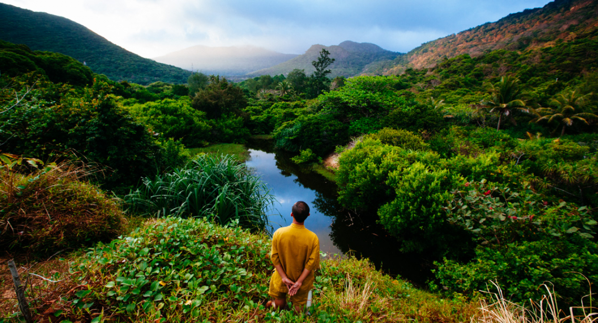
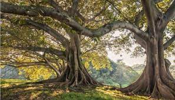
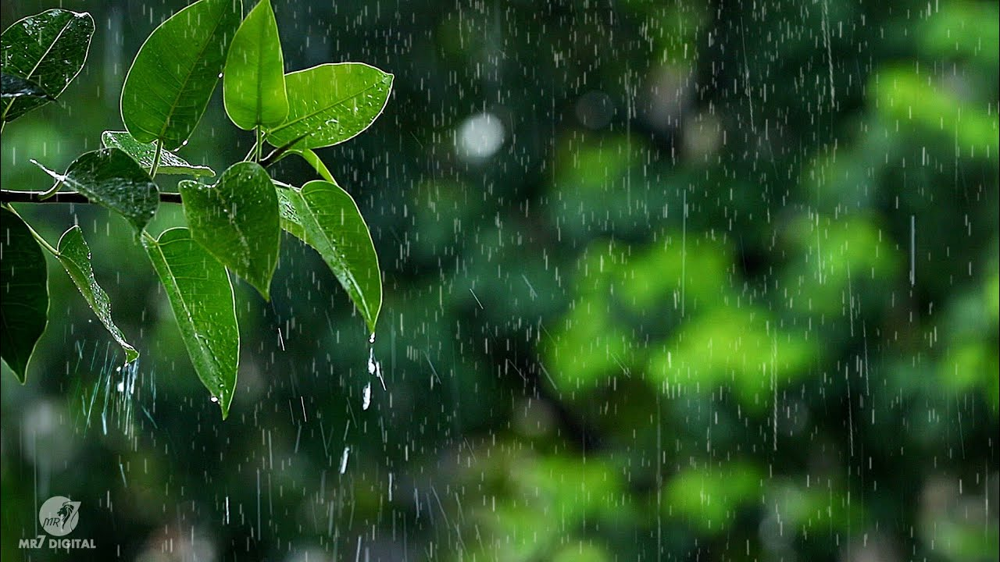

THE BEAUTY OF NATURE TRAVEL: A BLOG ROUNDUP
“Our task must be to free ourselves… by widening our circle of compassion to embrace all living creatures
and the whole of nature and its beauty.” -Albert Einstein
Whether you call it nature travel, sustainable travel or responsible ecotourism, there’s something incredibly potent, powerful, and cleansing about getting away from the hustle and bustle of the city. The air smells sweeter, the sun burns brighter, the colors seem more vivid, and time almost seems to stand still. Whether we’re hiking, kayaking, watching wildlife or just enjoying a quiet picnic, there’s something about unspoiled nature that simply soothes our soul.
With Earth Day coming up April 22, people tend to start thinking and talking about nature conservation more and more at this time of year. But our goal is to encourage people to embrace the beauty of nature and wildlife all year around. So when some of our blogging friends discussed having a monthly themed blog carnival, we immediately volunteered to host a Nature Travel round-up this month to draw more attention to the joys of ecotourism.
So how does it work? Well, if you’re a reader, click on some of the links below to discover some great bloggers writing about some of their favorite Nature Travel experiences, which will hopefully inspire your future adventures. And if you’re a blogger with a Nature Travel story of your own to share, just follow these simple steps:
1. Click on the “add” link below and follow the steps in the dialogue box. You can add an old or new post, but make sure the post you’re adding is about Nature Travel in some form or fashion.
2. Add an addendum to your participating post indicating that it’s part of a Nature Travel roundup, with a link back to this page.
3. Read through the other roundup contributions and get to know some of the bloggers behind them.
It’s as easy as that! Looking forward to reading and sharing our love of Nature Travel with you all. –Bret Love

The True Value of Trees
During this time of year, a lot of us are thinking about trees. For those who celebrate Christmas, a tree is usually the centerpiece for a family gathering around December 25. But that’s not the only time when we honor trees. Across the country, we commemorate trees on National Arbor Day, the first Friday in April; National Love a Tree Day, designated as May 16; National Tree Day, which is the first Sunday of August; and Look for an Evergreen Day, December 19th of each year. I’m sure I’m not the only who loves trees.
Of course, trees do a lot more for us than serve as the inspirers of holidays. They’re important to us as the producers of food crops, medicines and wood products. They also provide ecosystem services, a concept that allows researchers to quantify the benefits that nature contributes to people into monetary units. And surprisingly, perhaps, a new study suggests that trees provide greater economic value when they’re used to regulate air quality and climate than when they’re employed to supply products made from wood.
Trees regulate the climate by storing carbon, a greenhouse gas. But all the carbon sequestered in forests and trees worldwide could be thrown back into the atmosphere if large numbers of trees burn in forest fires. Trees can also stop scrubbing carbon dioxide from the air if they die due to drought or insect damage. Unfortunately, the likelihood of those threats impacting forests is increasing nationwide, making relying on forests to soak up carbon emissions a much riskier prospect.

A Time of Renewal: Autumn and Winter Nature
The change has taken place. The clocks have moved back by an hour, but still the days are surprisingly short, and the nights deep and long. I realise it’s only November, and that this strange, disconcerting feeling will only intensify over the coming months.
As autumn slips into winter, the atmosphere of the world seems to alter, and so do I. The weather becomes inextricably linked with my emotions – a true example of the ‘pathetic fallacy’ we used to analyse in English lessons. Mist seeps into the beginnings and ends of my days, and chilling fingers creep through the cracks in our house, lingering between my layers of clothing. My partner and I swaddle and wrap ourselves in warmth as best as we can (think dodgy electric heating system supplemented by many blankets) and struggle to ignore our instinct to hibernate.
Other animals do not resist this urge: they curl up individually or snuggle together in their nests, setts and roosts – saving energy for milder days when food is less scarce – be they dormice (who sleep most of the year), bats or badgers. How I wish I could join them and be submerged in a constellation of warm, breathing bodies, waiting for the dark and cold to pass. Witnessing a family of badgers doing this at the British Wildlife Centre recently has strengthened this yearning of mine.
Yet we can’t (or won’t) hibernate – but at least we can enjoy simple, peaceful activities such as reading about wildlife, making delicious food and drink from our foraged nuts and berries, and go on invigorating, life-affirming walks. Despite what I’ve said about animals hibernating, there is still a lot to be seen out there. And so much to learn.
This autumn, I again took the opportunity to search for glorious mushrooms that bejewel our local woodlands and forests. I was fortunate to discover a magical crowd of 17 (17!) fly agarics – my favourite of all fungi. Other notable finds were sulphuric dyemaker’s puffballs, juicy beefsteak fungi, merlot-coloured humpback brittlegills and delicate amethyst deceivers nestled in beds of emerald moss.
Visiting Knepp’s rewilded estate in October, we watched red and fallow stags strutting about in style, adorned with magnificent symbols of virility: their awe-inducing and intimidating antlers. (I dream of one day finding a discarded antler to take pride of place amongst my badger and bird skulls!) More than once, a stag slid into view from between the trees, with grunts that raised the hairs on the back of my neck and transported me to a primal, essential world.
Connecting with nature: The practice of ‘wind-watching’
The world is animated by the wind. This invisible, mysterious force can bring a landscape alive. Its absence can cast a calm stillness over the earth. On barren mountain tops its power is barely perceptible; in forests and seas its presence becomes manifest.
Winds are wild, and sometimes destructive. When we look deeply into the nature of wind, when we reflect on its life, its journey to us, we can see the interconnected nature of all things. The light from the sun travels to the surface of the earth, where air is heated unevenly over land and sea causing it to expand and rise at different rates until this rising and displacing air builds in billowing gusts that rock the oceans and ripple the seas. The wind can make rag-dolls of trees, ripping them from their roots.
The beauty of the wind is its dynamism. It is not constant, nor predictable. One minute it lifts the place; the next there is a lull of still abiding peace. On gentle days it is god’s whisper; In more rambunctious form it is a monster’s roar, a voice that erupts with a wild and angry energy.
When it blows, the air tattoos the surface of canals, lakes, seas, blowing beautiful patterns of rhythmic energy into the liquid silence. Trees bow down in submission, as leaves, branches and roots, dance to its music, its mad, manic energy. Forests roll around in circles sending signals to the clouds, waving to the skies, and laughing to the stars above.
When furious it blows blackened clouds across angry skies. The wind is a river and in its torrent clouds race each other seeking shelter, refuge from the howling ghosts of moving air.
What is the wind?
We often ‘see through’ space. We don’t notice air as much as say, earth or water. It is empty, invisible. Our attention is drawn towards a presence rather than an ‘absence’. We don’t see space but the objects in space, yet it is this space that ‘holds’ everything else, allowing all things to be. The air is an ocean; the wind is the waves and powerful swells that pass through the ocean. Pure energy.
The wind speaks to us through sight and sound, but perhaps more directly, we feel its presence through our sensitive skin-wrapped bodies. If the earth can be thought of as a body, the wind is its breath – no different from the breath that animates and vitalises our own living bodies.
The hug of homecoming: Hedonism in the natural world
In a very real sense, mountains and valleys, the seas and the skies, the sun and the earth, the trees and the flowers constitute our home, our natural habitat.
Growing up in the modern developed world we can easily come to believe that towns and cities – the urban and artificial environment – is where we naturally belong. But our brains and bodies, which evolved over thousands of years, were designed by and designed for an environment very different to the one we live in now.
Throughout our evolutionary history we lived in very close connection to the land, with a very close kinship with other creatures. Our physiological system evolved to survive in wild, natural environments and developed a love and kinship for these places that lives on in our DNA.
This connection with the land combined with the kinship we would have felt with other living things that shared the land as their home has hardwired in us a strong sense of the natural world as ‘home’, and the importance of connection with all of life as being essential to our well-being.
This ‘love for life’ or biophilia, is a basic need in human beings. But unfortunately, because of the increasingly urbanised nature of the modern world, many of us have become disconnected from nature and suffer from what Richard Louv calls ‘Nature-deficit disorder’. We have been left deprived of something that was a source of so much spiritual sustenance and nourishment since we first walked the earth, a loss which has undoubtedly effected our collective health and well-being.
Science is now backing up what most of us who have spent any amount of time in the outdoors intuitively know: Nature is good for us. Spending time in nature has been shown to decrease stress, alleviate depression and anxiety, improve memory, creativity, and cognitive functioning, as well as increase energy levels, boost immunity, and decrease inflammation.
The fact that so many of us are being deprived of something which is so essential for our well-being is a major health concern.
All of this is not to suggest that there is anything wrong with cities or that we should all go back to living off the land – far from it. Cities and towns are wonderful places to live and by and large filled with nature – if we take the time to explore.
But if we care about our own health and well-being (not to mention the healthy development of our children) it is essential that we take the time to make an effort to connect with the natural world on a regular basis.
This is not another health ‘should’. Our bodies and minds crave the return of this connection. Contact with the wild is a purely pleasurable experience. It is intrinsically rewarding. Consider the cornucopia of sensual experiences involved in this healthy hedonism which we are all familiar with:
The warmth of the sun against the skin; a gentle summer breeze; birds singing on a quiet spring morning; the calming sounds of waves lapping against the shore; a beautiful sunset; a grand mountain vista; the broad sweep of lush green valleys; clear blue skies; the stars and the moon at night; the scent of ripe fruit or roses in bloom; the glimmer of light on the ocean; the feel of sand or soil under foot; finding shade in the solidity of a tree; watching birds in flight with their great patterns of movement; the joy of dogs running and playing…
In the practice of nature connection there is none of the coercion often involved in other healthy habits like exercise and diets, nor the hangover of other pleasurable experiences like food and drink. Yet nature connection provides the health benefits of the former and the intoxication and bliss of the latter.
Think of it as the hug of homecoming.
Earth’s intelligence: Being pulled toward the heart of the world
How surely gravity’s law,
strong as an ocean current,
takes hold of even the strongest thing
and pulls it toward the heart of the world.
Each thing-
each stone, blossom, child –
is held in place.
Only we, in our arrogance,
push out beyond what we belong to
for some empty freedom.
If we surrendered
to earth’s intelligence
we could rise up rooted, like trees.
Instead we entangle ourselves
in knots of our own making
and struggle, lonely and confused.
So, like children, we begin again
to learn from the things,
because they are in God’s heart;
they have never left him.
This is what the things teach us:
to fall,
patiently trusting our heaviness.
Even a bird has to do that
before he can fly.